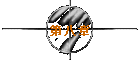
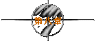

※第一次的亲密接触※
written by jht.

她坐在座位上，不发一语地凝视著我..
过了好久..她突然说出：
「痞子..电影终究会散场，但人生还是得继续..对吗？..」
虽然我点点头..但我心里却纳闷著..
她看到我点了头..迅速地站起身子..背上背包..跟著我走出电影院..
排队入场的人，和挤著出场的人..同时聚集在电影院门口..
使得散场的气氛像极了铁达尼号沉没前..船上人员争先恐后的逃生景象..
原来我们好像只是离开了电影上的铁达尼号..
而人生里的铁达尼号..却依然上映著..
离开了南台戏院..她的眼泪却未离开她的脸庞..
『我们走走吧！..』
6点是刚入夜的时候..霓虹闪烁的中正路..也许能让她忘掉铁达尼号的沉没..
「嗯..好..」
她点点头..却不小心滑落了两滴泪珠..
「痞子..你签个名吧！..」
她拿出那张电影票根..递给我..
『签什么？..难道签“余誓以至诚，效忠轻舞飞扬小姐”吗？..』
「讨厌..你签“痞子蔡”就好..反正我又不知道你的名字..」
『谁叫你不问我..』
「你也没问我ㄚ..这叫“己所不欲，勿施于人”..」
她又在乱用成语了..我赶紧在票根背后，签下痞子蔡三个字..
她看看我的签名..闪过一丝失望神情..但随即叹了一口气说：
「谢谢你..痞子..」
既然说谢谢，干嘛要叹气？..我的字很拙吗？..不会吧!?..
我们四处看看..但并没有交谈..
她突然在Christian Dior的专柜停了下来..
「痞子..你在连线小说板看过Lemonade写的“香水”吗？..」
『嗯..前一阵子看过这篇短篇小说..写得很感人ㄚ！..你干嘛这样问？..』
「这瓶Christian Dior 的 Dolce Vita..就是男主角在女主角订婚时送她 的..
他还说：Dolce Vita是义大利文，中文的意思是指“甜蜜的日子”..」
『是吗？..我倒是没看这么仔细..』
「痞子..那我们今天算不算“甜蜜的日子”？..」
『本来可以算是..但你一哭..就打了折..』
「那这样算是有点甜蜜又不会太甜蜜..就买小瓶的好了..」
幸好Lemonade写的只是“香水”..
万一她写的是“黄金”或是“钻石”..那我就债台高筑了..
『七点多了..你饿了吗？..要不要吃点东西..』
「我吃不下..你呢？..」
『You eat，I eat..』
她突然又怔怔地掉下泪来..
我真是白痴..她好不容易离开了铁达尼..我怎么又去打捞铁达尼的残骸
呢？
「我们去大学路那家麦当劳..好吗？..」
她擦了擦眼泪..勉强挤出一个笑容..向我这么建议著..
我点点头..骑上了那只野狼..她静静地坐在我的背后..
今晚的风..开始有点凉了..
到了麦当劳..好巧..竟然跟昨晚第一次见面的时间一样..也是七点半..
要吃1号餐吗？..她摇了一下头..2号餐呢？..她摇了两下头..
那3号餐好吗？..她摇了三下头...就这样一直摇到了最后一号餐..
所以我还是点了两杯大可和两份薯条..
然后坐在与昨天相同的位置上..
「痞子..你不吃东西会饿的..」
『你吃不下..我当然也吃不下..』
这就是逞强的场面话了..因为到现在为止..我今天还未吃过东西..
我咬了一口薯条..
奇怪？..今天的麦当劳薯条竟然不再清脆甜美..反而有点松软苦涩..
原来当她的笑容失去神采时..麦当劳的薯条便不再清脆..
「痞子..为何你会叫jht呢？..」
『j是Jack..h是hate..t是Titanic...jht即是“Jack hate Titanic”的缩写..』
「你别瞎掰了..还真的ㄌㄟ..」
『其实jht是我名字的缩写..不过看在Titanic让你泪流的面子上..
我这个Jack..自然不得不hate它了..』
「痞子..你不能hate Titanic..你一定要help Titanic..或是hold Titanic..」
hate？..help？..hold？..自从看完Titanic后..她就常讲一些我听不懂的话..
难道外文系也念哲学？..
然后她就很少说话了..偶而低头沉思..偶而呆呆地看著我..
为什么我要用“呆呆地”这种形容词呢？..
因为她好像很想仔细地看著我..但又怕看得太仔细..
这种行为不是“呆”是什么？..蠢？..笨？..傻？..
外面的大学路..开始人声鼎沸了..
「痞子..大学路现在为什么这么热闹呢？..」
『今天是1997年的最后一天..大学路有跨年晚会..待会去看？..』
「好ㄚ！..可是我想现在去ㄋㄟ..」
我二话不说..端起了盘子..指了指她的背包..
张灿□市长新官上任..封锁住大学路成大路段..想来个与民同乐..
他比阿扁市长幸运..因为他可以跟他太太跳舞给我们看..
但我又比他幸运..因为轻舞飞扬比他太太漂亮..
正在胡思乱想间..天空突然下起了一阵雨..
我不假思索地拉起了她的手..往成大成功校区警卫室旁的屋檐下奔去..
为了怕她多淋到几滴雨..情急之下做出这种先斩后奏的行为..
子曰：“不教而杀谓之虐”..由此观之..我的确是个很残忍的人..
不过幸好我叫痞子..所以不必为不够君子的行为背负太多良心上的谴责..
这是我第二次接触到她的手指..
和第一次时的感觉一样..她的手指仍然冰冷异常..
上次可能是因为冰可乐的关系..这次呢？..
也许是雨吧！..或者是今晚的风..
警卫室旁的屋檐并没有漏..但我现在却觉得“屋漏偏逢连夜雨”..
因为我看到了阿泰..
这种可以跳舞的场合自然少不了阿泰..就像厨房里少不了蟑螂..
不过他从不携伴参加舞会..
因为他常说“没有人去酒家喝酒还带瓶台湾啤酒去的”..
这话有理..舞会上充斥著各种又辣又正的美眉..什么酒都有..
干嘛还自己带个美眉去自断生路呢？..
如果美眉可以用酒来形容..那阿泰是什么？..
阿泰说他就是“开罐器”..
《痞子..你好厉害..竟然带瓶“皇家礼炮21响”的ＸＯ来..》
『别闹了..阿泰..这位是轻舞飞扬..』
《你好..久仰大名了..痞子栽在你的石榴裙下是可以瞑目的..》
「呵呵..阿泰兄..我对你才是久仰大名、如雷贯耳呢！..」
《是吗？..唉..我已经尽可能地掩饰我的锋芒了..奈何事与愿违..
没想到还是瞒不过别人识货的眼光..罪过..罪过ㄚ！..》
「我常在女生宿舍的墙壁上看到你的名字ㄛ！..」
《是吗？..写些什么呢？..一定都是些太仰慕我的话吧！..》
「不是ㄋㄟ..通常写“阿泰..你去吃屎吧！”..而且都写在厕所的墙壁上..」
《哈哈..轻舞兄..你和痞子都好厉害ㄛ！..》
我也笑得说不出一句话来..照理说阿泰是我的好友..我应该为他辩解的..
我这样好像有点见色忘友..不过事实是胜于雄辩的..
金黄色的射手阿泰..蓝色的天蝎痞子..和咖啡色的双鱼轻舞飞扬..
就这样在警卫室旁的屋檐下聊了起来..直到雨停..
这是我们三个人第一次..也是最后一次聚在一起..
《痞子..轻舞兄..雨停了..我去狩猎了..你们继续缠绵吧！..》
走得好！..我不禁拍起手来..再聊下去..我就没有形象了..
「痞子..你拍手干嘛？..」
『喔..刚刚放的音乐真好听..不由自主地想给它小小地鼓励一下..』
「痞子..你少胡扯..你怕阿泰抖出你的秘密ㄏㄡ？..」
我有秘密吗？..也许有..也许没有..
但在我脑海的档案柜里..最高的机密就是你..
这个跨年晚会是由一个地区性电台主办的..叫Kiss Radio..频道是FM97.1..
为什么我记得是FM97.1？..因为它广告的时间比播歌多..难怪叫“广播”..
节目其实是很无聊的..尤其是猜谜那部份..
哇ㄌㄟ..怎么问这种蠢问题？..蠢到我都懒得举手回答..
竟然还有人答“安平金城”..我还“亿载古堡”ㄌㄟ..
至于跳舞..我则是大肉脚..跳快舞时像只发情的黑猩猩..
「痞子..我不能跳快舞..所以不能陪你跳..Sorry..」
『那没差..反正你叫“轻舞”..自然不能跳快舞..』
「希望能有“The Lady in Red”这首歌..」
『不简单ㄛ！..这么老的英文歌..你竟然还记得..』
「前一阵子在收音机中听到..就开始爱上它了..」
原来如此..不然这首歌在流行时..她恐怕还在念小学吧！..
其实我也很喜欢这首歌..尤其是那句“took my breath away”..
我以前不相信为何舞池中那位红衣女子转身朝他微笑时..竟会让他感到窒息..
直到昨晚在她家楼下..她上楼前回头对我一笑..我才终于得到解答..
不过这首歌如果改成“The Lady in Coffee”..该有多好..
最好这首歌不要被阿泰听到..不然他一定改成“The Lady in Nothing”..
终于到了倒数计时的关键时刻..这也是晚会中的最高潮..
在一片欢呼声中..我们互道了一句：“新年快乐”..
她是学外文的..为何不学外国人一样..来个拥抱或亲吻呢？..
不过话不能这样讲..我是学水利的..也不见得要泼她水吧!?..
『明年我们再来？..』
「明年？..好遥远的时间ㄛ..」
又在说白痴话了..她大概累坏而想睡了吧!?..
送她回到她住的那条胜利路巷子..远离了喧闹..
与刚刚相比..现在静得几乎可以听见彼此呼吸的声音..
「痞子..你还记得“香水”中提到的正确的香水用法吗？..」
我摇了摇头..我怎么可能会记得？..我又不用香水..
「先擦在耳后..再涂在脖子上和手上的静脉..然后将香水洒在空中..
最后是从香水中走过..」
『真的假的？..这样的话..这小瓶香水不就一下子用光了？..』
「痞子..我们来试试看好吗？..」
『我“们”？..你试就好了..我是个大男人ㄋㄟ..』
她打开了那瓶Dolce Vita..先擦在左耳后..再涂在脖子上和左手的静脉..
然后还真的将香水洒在空中...哇ㄌㄟ..很贵ㄋㄟ！..
最后她张开双臂..像是淋雨般..仰著脸走过这场香水雨..
「呵呵呵..痞子..好香好好玩ㄛ！..轮到你了..」
她兴奋地笑著..像个天真无邪的小孩..
此时别说只叫我擦香水..就算要我喝下去..我也不会皱一下眉头..
我让她把香水擦在我的左耳后..以及脖子上和左手的静脉..
这是我第三次感觉到她手指的冰冷..是香水的缘故吧！..我想..
「痞子..准备了ㄛ..我要洒香水罗！..」
我学著她张开双臂..仰起脸..走过我人生的第一场香水雨..
「痞子..接下来换右耳和右手了..」
哇ㄌㄟ..还真的ㄌㄟ..我赚钱不容易ㄋㄟ..
在我还来不及心疼前..她已经走过了她的第二场香水雨..
而这次她更高兴..手舞足蹈的样子..就像她的昵称一样..
是一只轻舞飞扬的蝴蝶..
深夜的胜利路巷子内..就这样下了好几场的香水雨..
直到我们用光了那瓶Dolce Vita..
「Dolce Vita用完了..这个甜蜜的日子也该结束了..
痞子..我上去睡了..今夜三点一刻，我不上线，你也不准上线..」
『为什么？..』
「你在中午12点上线时就知道了..记住ㄛ！..只准在中午12点上线..」
她拿出钥匙，转过身去打开公寓大门..
就在此时..我看到她的后颈，有一处明显的红斑..
如果不是因为她今天将长发扎成马尾..我根本不可能会看到这处红斑..
她慢慢地走进那栋公寓..在关上门前..她突然又探头出来浅浅地笑著..
「痞子..骑车要小心点..」
在我尚未来得及点头前..门已关上..
我抬起头..想看看四楼的灯光是否已转为明亮？..
等了许久..四楼始终阴暗著..
阴暗的不只是在四楼的她..还有骑上野狼机车的我..
回到了研究室，阿泰闻到了我身上的香味..劈头就问：
《痞子..你身上为何这么香？..你该不会真的跟她来个“亲密接触”吧!?..》
我没有答腔..打开了冰箱..拿出了那两瓶麒麟啤酒..一瓶拿给阿泰..
我和他就这样静静地喝掉了这两瓶啤酒..
喝完了酒..阿泰拍了拍我的肩膀..然后离开了研究室..
随著时间愈接近三点一刻..我的心跳频率却愈快..
因为我希望能想像她也同时在黑暗中的感觉..
原来人在黑暗中..最容易感受到的..就是孤单..
她现在一定很孤单..但我又该如何陪伴她呢？..
在半梦半醒间..我彷佛看见一只美丽的蝴蝶..在火海中化为灰烬..
而那处红斑..亦由淡红渐渐转变为赤红..最后变成血红..将我吞噬..
是那瓶冰啤酒的缘故吗？..我突然全身发冷..
而那股凉意..竟直透内心深处..
随著时间愈接近三点一刻..我的心跳频率却愈快..
用guest上线吧！..因为我是jht..所以用guest上线不代表“我”上线..
上了线..Query一下她..果然不在线上..
我心脏的跳动速率虽快..但心脏的温度却依然很低..
好不容易熬到了中午12点..我兴奋而又紧张地以jht上了线..
但她却不在线上..于是线上好友名单中..
只有jht一个人..孤单地等待著FlyinDance..
然而却有她寄给我的一封mail..
待续
| 


 
